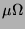
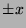
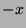
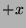

Next: PAUSE command
Up: Command descriptions
Previous: OP command
Contents
Subsections
OPTIONS command
OPTions
OPTions option-name value ...
Sets options, iteration parameters, global data.
Typical usage is the name of the item to set followed by the
value.
The bare command `OPTions' displays the values.
These options control the simulation by specifying how to
handle marginal circumstances, how long to wait for
convergence, etc.
Most of the SPICE options are supported, more have been added.
-
- ACCT
- Turns on accounting. When enabled, print the
CPU time used after each command, and a summary on exit in batch
more. This does not affect accounting done by the status
command.
- NOACCT
- Turns off accounting. (Not in SPICE.)
- LIST
- Turns on echo of files read by get and
merge commands, and in batch mode. (SPICE option accepted
but not implemented.)
- NOLIST
- Turns off list option. (Not in SPICE.)
- MOD
- Enable printout of model parameters. (Accepted,
but not implemented, to complement NOMOD.)
- NOMOD
- Suppress printout of model parameters. (SPICE
option accepted but not implemented.)
- PAGE
- Enable page ejects at the beginning of
simulation runs. (Accepted, but not implemented, to complement
NOPAGE.)
- NOPAGE
- Turn off page ejects. (SPICE option accepted
but not implemented.)
- NODE
- Enable printing of the node table. (SPICE
option accepted but not implemented.)
- NONODE
- Disable printing of the node table.
(Accepted, but not implemented, to complement NODE.)
- OPTS
- Enable printing of option values on every options
command.
- NOOPTS
- Disable automatic printing of option values.
Option values are only printed on a null options command.
- GMIN = x
- Minimum conductance allowed by the program.
(Default = 1e-12 or 1 picomho.) Every node must have a net
minimum conductance of GMIN to ground. If effective open
circuits are found during the solution process (leading to a
singular matrix) a conductance of GMIN is forced to
ground, after printing an "open circuit" error message.
- RELTOL = x
- Relative error tolerance allowed.
(Default =.001 or .1%.)
If the ratio of successive values in iteration are within RELTOL of one, this value is considered to have converged.
- ABSTOL = x
- Absolute error tolerance
allowed. (Default = 1e-12)
If successive values in iteration are within ABSTOL of
each other, this value is considered to have converged.
- VNTOL = x
- Absolute voltage error required to
force model re-evaluation. (Default = 1e-12 or 1 microvolt.)
If the voltage at the terminals of a model is within VNTOL of the previous iteration, the model is not
re-evaluated. The old values are used directly.
- TRTOL = x
- Transient error ``tolerance''.
(Default = 7.) This parameter is an estimate of the factor by
which the program overestimates the actual truncation error.
- CHGTOL = x
- Charge tolerance. (Default =
1e-14) It is used in step size control in transient analysis.
- PIVTOL = x
- Pivot tolerance. (Default =
1e-13) SPICE option accepted but not implemented.
- PIVREL = x
- Pivot ratio. (Default = 1e-3)
SPICE option accepted but not implemented.
- NUMDGT = x
- Number of significant digits to print
for analysis results. (Default = 5.) It is silently limited to 3
to 20.
- TNOM = x
- Nominal temperature. (Default =
27 C.)
All components have their nominal value at this temperature.
- ITL1 = x
- DC iteration limit. (Default = 100.)
Sets the maximum number of iterations in a DC, OP, or initial
transient analysis allowed before stopping and reporting that it
did not converge.
- ITL2 = x
- DC transfer curve iteration limit.
(Default = 50.) SPICE option accepted but not implemented.
Use ITL1 instead.
- ITL3 = x
- Lower transient iteration limit.
(Default = 4.) If the number of iterations is more than ITL3
the step size will not increase beyond its present size. Otherwise,
it can grow by trstepgrow.
- ITL4 = x
- Upper transient iteration limit.
(Default = 10.) Sets the maximum number of iterations on a step
in transient analysis. If the circuit fails to converge in this
many iterations the step size is reduced (by option trstepshrink),
time is backed up, and the calculation is repeated.
- ITL5 = x
- Transient analysis total iteration
limit. (Default = 5000.) SPICE option accepted but not
implemented. Actual behavior is the same as ITL5 = 0, in
SPICE, which omits this test.
- ITL6 = x
- Source stepping iteration limit.
(Default = 0.) SPICE option accepted but not implemented.
Source stepping is not available.
- ITL7 = x
- Worst case analysis iteration
limit. (Default = 1.)
Sets the maximum number of iterations for the individual
element trials in a DC or bias worst case analysis. If more
iterations than this are necessary, the program silently goes
on to the next step, as if nothing was wrong, which is usually
the case.
- ITL8 = x
- Convergence diagnostic iteration threshold.
(Default = 100.) If the iteration count on a step exceeds ITL8
diagnostic messages are printed in an attempt to aid the user in solving the
convergence problem.
- CPTIME = x
- Total CPU job time limit.
(Default = 30000.) SPICE option accepted but not implemented.
There is no limit imposed.
- LIMTIM = x
- CPU time reserved for plotting.
(Default = 2.) SPICE option accepted but not implemented.
- LIMPTS = x
- Max number of points printed.
(Default = 201.) SPICE option accepted but not implemented.
- LVLCOD = x
- Matrix solution and allocation
method. (Default = 2, generate machine language.) SPICE
option not implemented.
- LVLTIM = x
- Time step control method.
(Default = 2, truncation error.) SPICE option not implemented.
- METHOD = x
- Integration method. (Default =
TRAPezoidal.) Possible values are:
- EULER
- backward Euler, unless forced to other
- EULERONLY
- backward Euler only
- TRAP
- usually trap, but Euler where better
- TRAPONLY
- always trapezoid
- DEFL = x
- MOSFET default channel length in
meters. (Default = 100u.)
- DEFW = x
- MOSFET default channel width in
meters. (Default = 100u.)
- DEFAD = x
- MOSFET default drain diffusion area
in square meters. (Default = 0.)
- DEFAS = x
- MOSFET default source diffusion area
in square meters. (Default = 0.)
- SEED = x
- Seed used by the random number
generator. (Default = 1.) (ECA-2 equivalent = Random.)
(Not available in SPICE.) The same random numbers will be used
every time, determined by this seed number. Setting this to
zero is a special case, causing each run to start from a random
point.
- WCZERO = x
- Worst case zero window. (Default
= 1e-9) (Not available in SPICE.) Sets a window for the
difference in a DC or bias worst case analysis. Differences
less than this are assumed to be zero, for purposes of setting
direction flags. This prevents cluttering up the screen with
very small numbers that are essentially zero.
- DAMPMAX = x
- Normal Newton damping factor.
(Default = 1.) Sets the damping factor for iteration by damped
Newton's method, used when all is well. It must be between 0 and 1,
as close to 1 as possible and still achieve convergence. The useful
range is from .9 to 1. Setting DAMPMAX too low will probably cause
convergence to a nonsense result.
- DAMPMIN = x
- Newton damping factor in problem
cases. (Default = .5) Sets the damping factor for iteration by
damped Newton's method, used when there are problems. It must be
between 0 and 1, and is usually set somewhat less than DAMPMAX.
The useful range is from .5 to .9. Setting it lower than .5 may
cause convergence to a nonsense result. Aside from that, a lower
value (but less than DAMPMAX) tends to improve robustness at
the expense of convergence speed.
- DAMPSTrategy = x
- Damping strategy. (Default =
0) The actual damping factor to use is determined by heuristics.
Normally the damping factor is DAMPMAX. It is reduced to
DAMPMIN when certain conditions occur, then it drifts back
up on subsequent iterations. This parameter turns the various
heuristics on or off. The number to use is the sum of the following
flags.
- 1 the second iteration on any voltage or time step. (usually
helps robustness, but always increases iteration count.)
- 2 if the voltage at any nonlinear node exceeds the range
determined by VMIN, VMAX, and LIMIT. (usually
not desirable.)
- 4 if any device limiting algorithm is activated. (usually
not desirable.)
- 10 when any device crosses a region boundary. (usually
desirable and has little cost.)
- 20 when a FET or BJT is reversed. (usually helps robustness.
sometimes increases iteration count.)
- FLOOR = x
- Effective zero value. (Default =
1e-21) Results values less than FLOOR are shown as zero. Other
small numbers are rounded to the nearest FLOOR.
- VFLOOR = x
- Effective zero value for voltage probes.
(Default = 1e-15) Results values less than VFLOOR are shown as
zero. Other small numbers are rounded to the nearest VFLOOR.
- TEMPAMB = x
- Simulation temperature.
(Default = 27 C.) Sets the ambient temperature, in
degrees Celsius. This is the temperature at which the
simulation takes place, unless changed by some other command.
- Short = x
- Resistance of voltage source or
short. (Default = 1e-7 or 10 .) Sets the default
resistance of voltage sources. In some cases, inductors are
replaced by resistors, if so, this is the value. It is also
the resistance used to replace short circuits anywhere they are
not allowed and the program finds one.
- TRansits = x
- Mixed mode transition count. (Default = 2)
Sets the number of ``good'' transitions for a supposedly digital signal
to be accepted as digital.
- IN = x
- Input width. (Default = 80.)
Sets the last column read from each line of input. Columns
past this are ignored. This option is present only for SPICE
compatibility, through the width command, which is an
alias for options.
- OUT = x
- Output width. (Default = 80.)
Sets the output print width, for tables and character graphics.
- XDivisions = x
- X axis divisions. (Default = 4)
Sets the number of divisions on the X axis for plotting.
- YDivisions = x
- Y axis divisions. (Default = 4)
Sets the number of divisions on the Y axis for plotting.
- ORder = x
- Equation ordering. (Default = auto.)
Determines how external node numbers are mapped to internal numbers. The
values are FORward, REVerse, and AUTo.
- MODe = x
- Simulation mode selection. (Default = mixed.)
Values are ANAlog, DIGital, and MIXed. In analog mode,
logic elements (type U) are replaced by their subcircuits as if they were
type X. In digital mode, logic elements are simulated as digital regardless
of whether the signals are proper or not, as in traditional mixed-mode
simulation. In mixed mode, logic elements may be simulated as analog or
digital depending on the signals present.
- BYPass
- Bypass model evaluation if appropriate. If the last two
iterations indicate that an element is converged or dormant, do not evaluate
it but use its old values directly. (Default)
- VBYpass
- Check only voltage to bypass model evaluation. This
produces a faster but possibly less accurate simulation.
- NOBYpass
- Do not bypass model evaluation.
- LUBypass
- Bypass parts of LU decomposition if appropriate. If
only a few elements of the matrix were changed solve only those parts
of the LU matrix that depend on them. (Default)
- NOLUbypass
- Do not bypass parts of LU decomposition. Solve
the entire LU matrix whenever a matrix solution is called for regardless
of whether it is actually needed.
- INCmode
- Incrementally update the matrix. Instead of
rebuilding the matrix on every iteration, keep as much of the old
matrix as possible and make incremental changes. (Default)
- NOIncmode
- Do not incrementally update the matrix. This
eliminates a possible cause of roundoff error at the expense of a slower
simulation.
- TRACELoad
- Use a queue to only load changed elements
to the matrix. This results in faster loading and has no known
drawbacks. (Default)
- NOTRACELoad
- Do not use a queue to only load changed
elements to the matrix. Instead, load all elements, even if they
are unchanged or zero. This is always slower, and is forced if
"noincmode".
- LIMIT = x
- Internal differential branch voltage
limit. (Default = 1e10, essentially disabled.) All circuit branch
voltages may be limited to  to aid in convergence. This is
intended as a convergence aid only. It may or may not help.
- VMIN = x
- Negative node voltage limit. (Default
= -30) All node voltages may be limited to  to aid in convergence
and prevent numeric overflow. This is intended as a convergence
aid only. It may or may not help.
- VMAX = x
- Positive node voltage limit. (Default
= 30) All node voltages may be limited to  to aid in convergence
and prevent numeric overflow. This is intended as a convergence
aid only. It may or may not help.
- DTMIn = x
- Minimum time step. (Default = 1e-12.)
The smallest internal time step in transient analysis. The transient command dtmin option and the dtratio option
override it if it is bigger.
- DTRatio = x
- The ratio between minimum and maximum
time step. (Default = 1e9).
- RSTray
- Include series resistance in device models. This
creates internal nodes and results in a significant speed and memory
penalty. It also makes convergence characteristics worse.
- NORSTray
- Do not include series resistance in device
models. This results in faster simulations and better numerical
accuracy at the expense of model accuracy. Differences between
rstray and norstray have been observed to be insignificant
most of the time. Some popular commercial versions of SPICE do
not implement series resistance at all, so norstray may be
more consistent with other simulators.(Default)
- CSTray
- Include capacitance in device models. This may
create internal nodes and result in a significant speed and memory
penalty. It also may make convergence characteristics worse. (Default)
- NOCSTray
- Do not include capacitance in device models.
This results in faster simulations and better numerical accuracy
at the expense of model accuracy. Differences between cstray
and nocstray are usually significant, since often the strays
are the dominant reactive elements.
- Harmonics = x
- Harmonics in Fourier analysis.
(Default = 9) The number of harmonics to display in a Fourier
analysis, unless specified otherwise.
- TRSTEPGrow = x
- The maximum internal step size
growth in transient analysis. (Default = 2.)
- TRSTEPShrink = x
- The amount to decrease the
transient step size by when convergence fails. (Default = 8.)
- TRReject = x
- Transient error rejection threshold.
(Default = .5) Controls how bad the truncation error must be to
reject a time step. A value of .5 means that if the step reqested
is smaller than .5 times the step size used, the current step will
be rejected. If the new step is .8 times the old step size it will
be adjusted but the step just calculated will not be rejected.
- options
- Display the present settings.
- options itl1=50
- Allows 50 iterations in a dc or op analysis.
Next: PAUSE command
Up: Command descriptions
Previous: OP command
Contents
Al Davis
2001-10-28